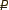

Проект «Базовый»

 Смотреть панорамы: 1 — 7,2 Мб; 2 — 6,12 Мб
Смотреть панорамы: 1 — 7,2 Мб; 2 — 6,12 Мб
Этот тип работ включает в себя весь комплекс услуг по благоустройству территории. При создании ландшафтного проекта учитываются как особенности участка, так и предпочтения клиента. Детальная разработка всех нюансов, творческий подход и качественное исполнение — залог нашего успеха. Такой сад будет радовать Вас и Ваших близких долгие годы.
Площадь — 30 соток
Общая сумма — 9 258 148,55 
За сотку — 308 604,95